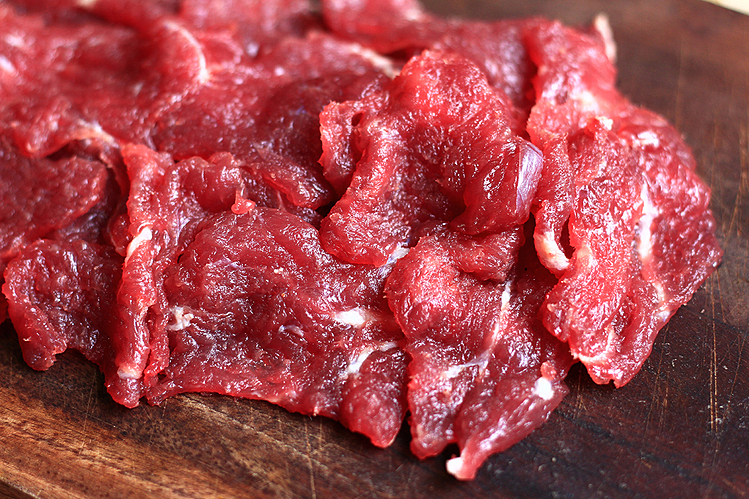
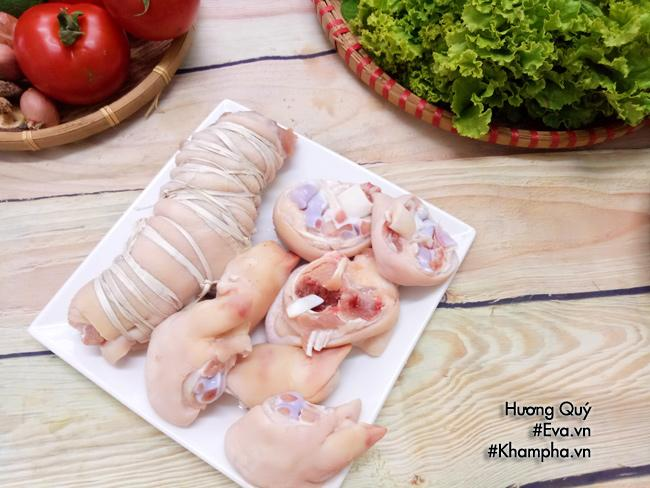
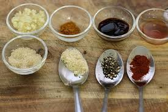

Nguyên Liệu

Thịt bò
500g

Giò heo
200g

Bún tươi
1kg
Hành tây
1 củ
Rau sống
200g

Gia vị
Muối, nước mắm, tiêu, đường
Cách Chế Biến
- Rửa sạch thịt bò và giò heo, luộc sơ qua để khử mùi.
- Ninh xương bò và giò heo trong nước khoảng 2-3 giờ để lấy nước dùng.
- Thêm gia vị: muối, nước mắm, đường và tiêu vào nước dùng.
- Luộc bún tươi, sau đó rửa qua nước lạnh và để ráo.
- Chia bún ra tô, cho thịt bò, giò heo và nước dùng vào.
- Thêm hành tây, rau sống, và giá lên trên, dùng kèm với chanh và ớt.